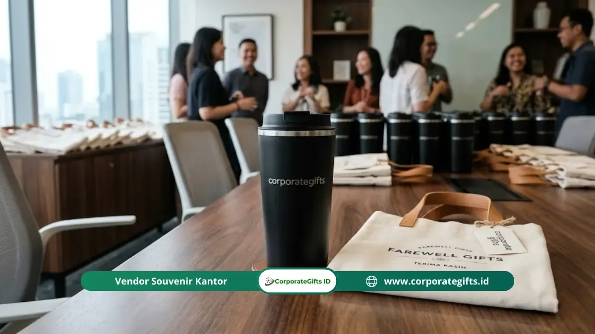

Corporate Gifts ID - Isi goodie bag perpisahan kantor yang tepat adalah kombinasi 2 hingga 4 produk fungsional dalam satu kemasan tematik, seperti tumbler mini, notebook custom, alat tulis, dan snack premium. Kombinasi ini terbukti lebih berkesan dibanding souvenir tunggal karena setiap item terus digunakan penerima setelah acara selesai. Panitia dapat menyesuaikan jumlah dan jenis item dengan anggaran per unit tanpa mengurangi kesan profesional acara.
Poin Kunci Goodie Bag Perpisahan Kantor:
- Kesan Lebih Kaya: Goodie bag tematik multi-item memberikan nilai apresiasi lebih tinggi dibanding souvenir tunggal.
- Kombinasi Fungsional Populer: Tumbler compact, notebook A6 custom, pulpen metal, dan snack premium dalam wadah tematik.
- Tingkat Retensi Tinggi: Riset PPAI mencatat merchandise fungsional memiliki retensi pemakaian 76% di atas 6 bulan.
- Fleksibilitas Anggaran: Dapat dirancang mulai dari rentang ekonomis Rp50.000 hingga paket VIP eksklusif di atas Rp200.000 per paket.
Mengapa Goodie Bag Menjadi Pilihan Populer Souvenir Perpisahan Kantor?
Goodie bag perpisahan kantor adalah format souvenir yang menggabungkan beberapa produk kecil dalam satu kemasan, memberikan kesan lebih kaya dibandingkan souvenir tunggal dengan harga yang tidak selalu jauh berbeda.
Format ini sangat diminati panitia perpisahan kantor karena fleksibel dalam menyesuaikan isi dengan anggaran yang tersedia. Jika anggaran terbatas, isi bisa disederhanakan menjadi dua item esensial. Sebaliknya, jika anggaran memadai, paket dapat diperkaya dengan produk premium dan kemasan box yang lebih eksklusif.
Data dari Promotional Products Association International (PPAI) menegaskan bahwa merchandise fungsional memiliki tingkat retensi 76% di atas 6 bulan pemakaian. Artinya, memilih isi goodie bag yang fungsional dan berkualitas jauh lebih efektif dibanding memilih produk pajangan yang rentan terlupakan setelah hari acara usai.
Apa Saja Rekomendasi Isi Goodie Bag Perpisahan Kantor yang Paling Efektif?
Isi goodie bag perpisahan kantor terbaik adalah kombinasi produk harian yang dapat dicetak identitas acara, dikemas dalam wadah tematik yang rapi dan mudah dibawa pulang:
1. Tumbler Mini atau Botol Minum Compact
Tumbler mini berukuran 350 ml hingga 500 ml adalah item utama yang paling sering menjadi primadona dalam goodie bag perpisahan. Ukurannya yang ringkas memudahkan pengemasan, sementara fungsinya yang tinggi memastikan produk ini terus digunakan saat bekerja maupun bepergian.

Pembagian tumbler custom dan tote bag perpisahan pada acara temu pisah karyawan kantor.
2. Notebook Saku atau Memo Book Custom
Notebook berukuran A6 atau memo book spiral adalah item pelengkap yang ringan dan mudah dikemas. Sampulnya dapat dicetak nama acara, tanggal perpisahan, atau kutipan motivasi yang merefleksikan budaya perusahaan.
3. Alat Tulis atau Pulpen Metal Custom
Satu atau dua pulpen custom dengan grafir nama perusahaan adalah item berbiaya efisien yang menyempurnakan paket tanpa membebani anggaran. Alternatifnya, highlighter multifungsi atau pulpen gel ergonomis sangat disukai pekerja kantoran.
4. Snack Premium atau Produk Konsumsi Berkualitas
Menambahkan satu item konsumsi seperti cokelat artisan, biskuit gandum kemasan kaleng kecil, atau drip bag coffee memberikan sentuhan hangat pada paket goodie bag perpisahan. Item ini langsung dinikmati saat acara, menciptakan momen kebersamaan yang menyenangkan.
5. Stiker Tematik atau Kartu Ucapan Personal
Kartu ucapan terima kasih dengan tanda tangan digital manajemen atau stiker grafis tematik memberikan sentuhan emosional yang mendalam tanpa menambah beban biaya produksi.
Bagaimana Cara Menyusun Isi Goodie Bag Sesuai Anggaran?
Menyusun isi goodie bag perpisahan kantor yang ideal dimulai dari penetapan plafon anggaran per unit yang realistis, kemudian memadukan variasi produk yang menghasilkan nilai persepsi tertinggi:
- Paket Starter (Rp50.000 - Rp100.000 per paket): Berisi 1 item utama (tumbler eco plastik atau tote bag kanvas) ditambah 1 item pendukung (pulpen custom/memo book), dikemas dalam paper bag kraft.
- Paket Standard (Rp100.000 - Rp200.000 per paket): Berisi tumbler stainless steel compact, notebook A6 custom logo, snack artisan, dan kartu ucapan dalam pouch kanvas resleting.
- Paket Executive (Di atas Rp200.000 per paket): Berisi tumbler vacuum flask SUS 304, agenda hardcover kulit eksklusif, pulpen metal grafir, powerbank mini, dan kemasan hardbox berpita magnetik.
Tabel Rekomendasi Paket Goodie Bag Perpisahan & Estimasi Budget
Berikut adalah tabel acuan kombinasi isi paket goodie bag perpisahan kantor beserta estimasi anggarannya:
| Kategori Paket | Kombinasi Isi Produk | Pilihan Kemasan Luar | Estimasi Biaya per Paket | Peruntukan Acara |
|---|---|---|---|---|
| Paket Hemat Sahabat | Tote bag kanvas blacu, pulpen gel cetak logo, mini notes spiral, sticker pack | Tote bag itu sendiri / Paper bag kraft | Rp50.000 - Rp85.000 | Perpisahan staf divisi, magang, gathering |
| Paket Fungsional Modern | Tumbler stainless 500ml, notebook A6 custom, pulpen metal, cookies jar mini | Pouch kanvas serut / Paper bag art carton | Rp100.000 - Rp175.000 | Pelepasan karyawan tetap, mutasi kerja |
| Paket Eksekutif Purnatugas | Smart LED tumbler, executive leather notebook, pulpen parker-style, flashdisk kartu | Rigid hard box custom magnetik | Rp200.000 - Rp350.000+ | Purnatugas (pensiun), mutasi pimpinan VIP |
Bagaimana Tips Kemasan Goodie Bag Perpisahan agar Terlihat Profesional?
Kemasan yang rapi menciptakan pengalaman unboxing yang hangat dan berkesan. Berikut empat tips esensial dalam menata kemasan:
- Pilih Satu Palet Warna yang Konsisten: Gunakan warna korporat sebagai benang merah desain seluruh item agar terlihat serasi dan elegan.
- Sematkan Tanggal dan Nama Acara: Informasi kenang-kenangan pada kemasan luar menjadikannya benda memorabilia yang layak disimpan.
- Terapkan Desain Grafis Minimalis: Hindari layout yang terlalu padat; ruang kosong yang proporsional membuat brand terlihat lebih eksklusif.
- Pilih Material Kemasan Reusable: Menggunakan tas kanvas atau paper bag ramah lingkungan mencerminkan kepedulian sosial korporasi terhadap bumi.
Kesimpulan dan Solusi Pengadaan
Goodie bag perpisahan kantor yang berkesan tidak harus mahal. Kunci utamanya terletak pada kurasi kombinasi produk yang fungsional, kemasan yang bersih dan tematik, serta konsistensi identitas visual acara.
Rencanakan kebutuhan cinderamata perpisahan kantor Anda jauh-jauh hari bersama mitra terpercaya. Konsultasikan rancangan paket custom Anda bersama Corporate Gifts ID untuk mendapatkan penawaran harga grosir terbaik, jaminan garansi mutu, dan layanan sampel mockup gratis.